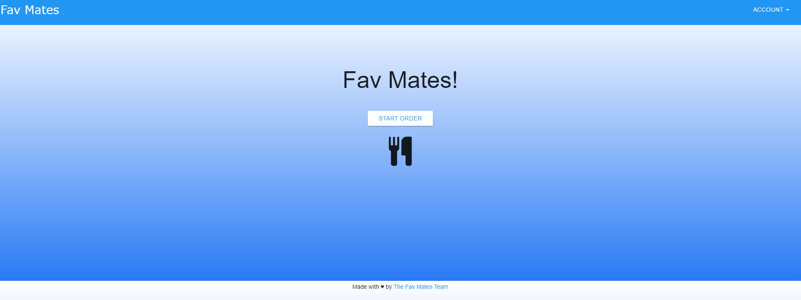
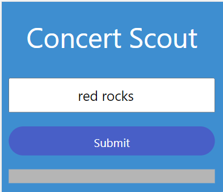

Work

Fav Mates! Website

Concert Scout Website
I am a GIS graduate with 5 years experience in the Geospatial profession. I graduated from the University of Minnesota in 2017 with a Bachelor of Science degree in Geography, and with a Minor in GIS. As an undergrad I worked as a research assistant helping to interview experts on the Gates foundation's role in the Green Revolution in Africa
Currently I work at Polaris Industries as a GIS Tech, where I perform spatial analysis for various business units, as well as managing all geospatial data on the Ride Command App. Some of my projects include site suitability analysis, optimizing fleet routing, riding hotspot analysis, and cell coverage analysis.